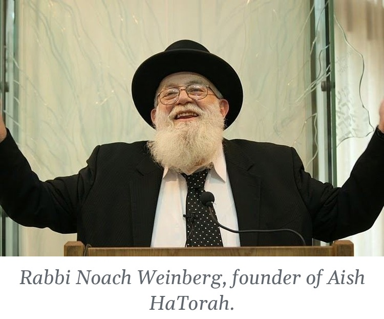

Are You Jewish?
For about forty years, a painfully shy man stood at the Western Wall and asked young strangers one question.
He would walk up to a backpacker with a camera around his neck, a student between semesters, a young traveler who had wandered into the Old City almost by accident, and ask, “Are you Jewish?” If the answer was yes, he would ask whether they would like a free Shabbos meal, a class, a bed for the night. His name was Rabbi Meir Schuster. Rabbi Noach Weinberg, who knew him well, described him as extremely shy by nature.1 And yet thousands of people who are today parents and grandparents of Torah-observant families can trace their first step back to that one awkward question.
I keep thinking about him this week, because this week we read Lech Lecha, the parashah of the first Jew who found his way. And I keep thinking about the other people who have been finding their way in the three years since the night of Simchas Torah 5784: survivors of the Nova festival, hostages in the tunnels of Gaza, soldiers, families who had never kept a Shabbos in their lives. Something is happening to our people in the dark. Rav Tzadok HaKohen of Lublin tells us what it is.
PRI TZADIK · LECH LECHA, OT 7
Forty-Eight Years
In Pri Tzadik on this parashah, Rav Tzadok begins with a Midrash that is easy to pass over. Avraham Avinu, the Midrash says, was afraid. He looked back at all the years he had spent among idolaters, before he came to know Hashem, and he worried: perhaps I am still carrying the sin of those years. Hashem answered him with a verse from Tehillim: lecha tal yalduscha, “yours is the dew of your youth.” Just as dew evaporates, so your sins evaporate; just as dew is a sign of blessing for the world, so are you.2
Rav Tzadok asks why Hashem chose dew, of all things, to set Avraham’s mind at rest. His answer is one of the most consoling ideas in all of his writing. The years before Avraham found his Creator were not an accident that Hashem had to clean up afterward. They were part of the plan.
“So it was intended by Hashem, blessed be He, that there first be the forty-eight years, and that only afterward would Avraham our father recognize his Creator.”
שֶׁכֵּן הָיָה הַמְּכֻוָּון מֵהַשֵּׁם יִתְבָּרַךְ שֶׁיִּהְיֶה מִקּוֹדֶם הָאַרְבָּעִים וּשְׁמוֹנֶה שָׁנָה, וְשֶׁאַחַר כָּךְ יַכִּיר אַבְרָהָם אָבִינוּ אֶת בּוֹרְאוֹ
— Pri Tzadik, Lech Lecha, Ot 7
Forty-eight years. The father of our people did not grow up frum. He grew up in Ur Kasdim, in the house of an idol maker, and he found Hashem as an adult, by himself, against everything around him. Every baal teshuvah who has ever felt like a latecomer, who has sat in a shiur and wondered whether everyone else had a head start, should know that the first Jew was a latecomer too, and that Hashem told him those years were dew.
Rav Tzadok explains the dew through a teaching of the Gemara. Isaiah says, “If your sins are like scarlet (kashanim), they shall become white as snow,” and the Sages read kashanim as “like the years”: even if your sins are as many as the years that have run in order since the six days of Creation.3 Through teshuvah me’ahavah, repentance out of love, a person discovers that his whole story was already held inside the first word of the Torah, Bereishis, where “emptiness and void” are already mentioned, and that every year of it was part of the plan.
Lech Lecha Is Said to Every Soul
Rav Tzadok then brings the Zohar, which reads the whole parashah as the story of every soul.4 “Go from your land, from your birthplace and from your father’s house” describes the soul’s descent from the Garden of Eden, from the Tree of Life, from the assembly of Israel above, “to the land that I will show you,” which is this world, the body. Lech lecha, he says, means “go to repair your own level,” to keep moving from one rung to the next.
“‘Go for yourself’ — to repair your own level … that he should always be going from level to level.”
וְזֶה שֶׁנֶּאֱמַר לוֹ: "לֶךְ לְךָ" – לְאַתְקָנָא דַּרְגָּא דִילָךְ … שֶׁיִּהְיֶה הוֹלֵךְ תָּמִיד מִדַּרְגָּא לְדַרְגָּא
— Pri Tzadik, Lech Lecha, Ot 7
But the verse continues: va’yelech ito Lot, “and Lot went with him.” The Zohar reads Lot as the serpent, the force that was cursed and brought a curse into the world, and Rav Tzadok draws the conclusion for every one of us.
“So too with every person: the soul descends into the body with all the holy levels, only the evil inclination goes along with it immediately.”
וְכֵן בְּכָל אָדָם, הַנְּשָׁמָה יוֹרֶדֶת לַגּוּף בְּכָל הַקְּדוּשׁוֹת, רַק הַיֵּצֶר הָרָע הוֹלֵךְ עִמָּהּ תֵּיכֶף
— Pri Tzadik, Lech Lecha, Ot 7, citing Genesis 8:21
Every soul comes down holy, and every soul has a Lot walking beside it from the first day. That is not a defect in the plan. It is the plan. The question is only what Avraham does about Lot.
Four Kings Against Five
Which brings us to the strangest chapter in the parashah. Out of nowhere, the Torah interrupts the story of Avraham with a world war. Four great kings from the east, led by Amrafel king of Shinar, march against five kings of the Jordan valley, led by the king of Sodom. The five had served Kedorlaomer for twelve years and rebelled in the thirteenth. The four crush them, sweep through the valley, and carry off its people and wealth.5
The Midrash tells us who the four kings really are. Amrafel is Nimrod, the man who threw Avraham into the furnace. And together the four are the four kingdoms of our exile: Babylon, Greece, Media and Edom, the empire that “recruits soldiers from all the nations of the world.”6 The war of the kings is a preview of all of Jewish history.
The Chassidic masters looked deeper still. Rabbi Tzvi Elimelech of Dinov, author of the Bnei Yissaschar, writes in his Agra DeKala, following the Arizal, that “according to the way of truth” the four kings stood in the realm of kelipah opposite the four letters of Hashem’s Name, and the five opposite the five letters of its expanded form.7 The war of the kings was a war over the Name of Hashem in the world.
Our Rishonim also left us an important warning. In the early fourteenth century, some philosophers in Provence taught that the whole story was only a parable, that “the four kings who fought the five are the four elements and the five senses.” The great rabbis of that generation, led by the Rashba of Barcelona, protested in the strongest terms: such readers, they wrote, make the Torah into a forgery and uproot its plain meaning.8 The war really happened, on a real map, to a real Avraham and a real Lot. But because the Torah is true on every level, the history also holds a lesson for each of us.
I have come to read the battle as the battle inside every one of us as well. On one side stand the four kings: the great outside forces of exile, the ideologies and empires and pressures that tell a Jew who he is supposed to be. On the other side stand the five kings of Sodom, the valley that looked “like the garden of Hashem”9 and was rotten inside: the pull of comfort and appetite and the five senses, the life that is pleasant and self-contained and closed to anyone in need. Most of us spend our lives caught between those two armies. And Avraham, in the story, stays out of the war entirely, until one verse changes everything.
“And they took Lot, the son of Avram’s brother … and they went.”
When Avraham hears that Lot has been taken captive, he arms the three hundred and eighteen men of his household, chases the four great kings all the way to Dan, divides his forces at night, and brings Lot back.10 He risks everything for a nephew who chose Sodom, who walked away from him, who by every reasonable measure was not worth it.
Why? The Midrash gives an answer that takes my breath away. On the verse “I have found David My servant,” it asks: where did Hashem find him?
“Rabbi Yitzchak said: ‘I have found David My servant.’ Where did I find him? In Sodom.”
אָמַר רַבִּי יִצְחָק: מָצָאתִי דָּוִד עַבְדִּי, הֵיכָן מְצָאתִיו בִּסְדוֹם
— Bereishis Rabbah 41:4, on Psalms 89:21
Inside Lot was the future. From Lot would come Ruth the Moabite and Naamah the Ammonite, and from them the house of David and, in the end, Mashiach.11 When Avraham went into the night to bring Lot home, he was not rescuing a lost relative. He was rescuing the redemption.
The Agra DeKala says it outright. Avraham’s real aim in the war, he writes, was David.
“The main purpose of Avraham in the wars of the kings was for the sake of David our master … These four kings who took Lot captive were rooted in the kelipah opposite the four kingdoms that rose against Israel and took David’s house captive … and Avraham defeated them and took for himself the captives of Lot, in whom were the sparks of David, to hint that in the end the God of heaven will raise up a kingdom that will never be destroyed.”
שעיקר מגמת אברהם במלחמות המלכים על דבר דוד אדונינו … והנה ענין המלכים הארבעה מלכים האלה ששבו שבית לוט, הם היו שרשם בקליפה נגד ארבע מלכיות שקמו על ישראל ושבו שבית דוד … ואברהם נצח אותם ולקח לעצמו את שבות לוט שבו ניצוצי דוד, לרמז שבאחרונה יקום אל"ה שמיא מלכותא די לעלמין לא תאבד
— Agra DeKala, Lech Lecha, on Genesis 15:1, citing Daniel 2:44
That is our avodah. Every one of us has a Lot inside, the part of us that drifted toward Sodom, the part that the four kings carried off. The yetzer will tell you that part is gone, that it belongs to the valley now. Avraham says no. You go after it, at night if you have to, and you bring it back, because that is exactly where Hashem hid David.
But the Gemara adds a surprising criticism. Avraham was punished, it says, and his descendants went down to Egypt, because he drafted talmidei chachamim to fight in this war.12 The Maharal of Prague explains why.
“You should know that it is fitting for the intellect to be separate from the physical … and when Avraham our father drafted talmidei chachamim to be fighters against the four kings, it was not fitting according to the proper order, and therefore there was opposition from the Egyptians against his children as well.”
ועוד יש לך לדעת כי ראוי הוא שיהיה השכל נבדל מן הגשמי … וכאשר אברהם אבינו עשה אנגריא בת"ח שיהיה לוחמים עם הד' מלכים אין ראוי לפי הסדר, ולפיכך היה התנגדות ג"כ מן המצרים אל בניו
— Maharal, Chiddushei Aggados, Nedarim 32a
Even the rescue of Lot, the Maharal is telling us, must be fought on the right battlefield. A talmid chacham’s weapon is not a sword. The war for the lost Jew is won with Torah, with a Shabbos table and a chavrusa, and that is exactly how the men in the next part of this story chose to fight it.
PRI TZADIK · LECH LECHA, OT 2
Every Jew Has a Share
When Avraham comes back from the battle, two kings come out to meet him. The king of Sodom offers him the spoils; Avraham refuses to take “a thread or a shoelace.” And Malki-Tzedek, king of Shalem, whom the Sages identify as Shem the son of Noach, brings out bread and wine and blesses him.13 The Gemara says that because Malki-Tzedek blessed Avraham before he blessed Hashem, the priesthood was taken from Shem and given to Avraham.14
The Maharal explains the difference between the two men. Shem came to know Hashem by seeing His works in the world, and so he naturally blessed the man through whom those works had been done. Avraham came to know Hashem from Hashem Himself.
“Shem the son of Noach recognized Hashem when he saw the working of His deeds in the world, and from this he recognized his Creator … but Avraham recognized Hashem from Himself, not from His works, only from Himself … therefore his priesthood could never be removed, for it is a necessary thing.”
ועוד יראה כי שם בן נח הכיר את הש"י כאשר ראה את פעולת מעשיו בעולם, ומצד הזה הכיר את בוראו … אבל אברהם היה מכיר את הש"י מצד עצמו לא מצד פעולותיו רק מצד עצמו … לכך לא היה הסרה לכהונתו כי הוא דבר מחויב
— Maharal, Chiddushei Aggados, Nedarim 32b
In an earlier piece on the parashah, Rav Tzadok draws a remarkable conclusion from this. He is explaining the seven blessings Hashem gave Avraham at the start of Lech Lecha, and he says that the power of the kohanim to bless Israel does not come from Shem at all. It comes from Avraham.
“And this power is from Avraham our father … as it says, ‘You are a priest forever, by the word of Malki-Tzedek,’ which is expounded (Nedarim 32b): the Holy One, blessed be He, sought to bring forth the priesthood from Shem … and because of his words He gave it to Avraham.”
וְזֶה הַכֹּחַ מֵאַבְרָהָם אָבִינוּ עָלָיו הַשָּׁלוֹם, וְזֶה שֶׁנֶּאֱמַר: "אַתָּה כֹהֵן לְעוֹלָם עַל דִּבְרָתִי מַלְכִּי צֶדֶק", שֶׁנִּדְרָשׁ (נְדָרִים לב עַמּוּד ב): שֶׁבִּקֵּשׁ הַקָּדוֹשׁ בָּרוּךְ הוּא לְהוֹצִיא כְּהֻנָּה מִשֵּׁם … וְעַל דִּבּוּרוֹ נְתָנָהּ לְאַבְרָהָם
— Pri Tzadik, Lech Lecha, Ot 2, on Psalms 110:4
In the same piece Rav Tzadok says something that could stand as the motto of every kiruv organization in the world. The blessing “and you shall be a blessing,” he says, belongs to Moshe Rabbeinu, who made the Torah shine in every single Jew, so that even the simplest person, even one who has never learned, has a portion in it. He brings the Midrash about the unlearned man who said to Rabbi Yannai, “My inheritance is with you,” because the verse says “The Torah … is the inheritance of the congregation of Yaakov,” not of the scholars alone.15
“… for even the lowliest in Israel, who is compared to the earth, has a share in the Torah, as it says, ‘an inheritance of the congregation of Yaakov.’”
שֶׁאַף הַשָּׁפֵל שֶׁבְּיִשְׂרָאֵל שֶׁנִּמְשַׁל לַאֲדָמָה יֵשׁ לוֹ חֵלֶק בַּתּוֹרָה, כְּמַה שֶּׁנֶּאֱמַר: "מוֹרָשָׁה קְהִלַּת יַעֲקֹב"
— Pri Tzadik, Lech Lecha, Ot 2
Avraham refused even a shoelace from Sodom, but he would not leave a single soul there. And the Torah he passed down is not the property of an elite. It is an inheritance, and an inheritance belongs to every child whether or not he has ever seen it. That is the faith that sent a small group of men into the night.
The Men Who Went Into the Night
Fifty-nine years ago this past June, the Old City of Jerusalem was returned to Jewish hands, and Jewish young people from all over the world began to arrive at the Kotel with no idea what it was they were feeling. A small group of men decided that someone had to go after them. They were, each in his way, Avraham’s three hundred and eighteen.

Rabbi Noach Weinberg (1930–2009), born on the Lower East Side, believed that every Jew could be reached with reason and love. Around 1970 he joined Rabbi Nota Schiller, Rabbi Mendel Weinbach and Rabbi Yaakov Rosenberg in founding Yeshivas Shema Yisrael in Jerusalem, one of the first yeshivos built for young men who had grown up far from Torah. In 1974 he founded Aish HaTorah in the Old City, with five students. Aish grew into a worldwide movement, and his Discovery seminar, launched in 1985, and his 48 Ways to Wisdom have reached Jews all over the world.16
Rabbi Mendel Weinbach (1933–2012), born in Galicia and raised in America, settled in Israel in 1962. With Rabbi Nota Schiller he built Shema Yisrael into Ohr Somayach, and for four decades served as its rosh yeshiva, growing it into a network of institutions in Israel, North America, England, South Africa and beyond. He is remembered as one of the fathers of the modern baal teshuvah movement.17
Rabbi Yaakov Rosenberg (d. 1999), a son-in-law of Rav Shimon Schwab, left a successful business career to give his life to this work. After helping found Ohr Somayach he founded Machon Shlomo in Jerusalem and the Summer Torah Institute in Connecticut. He began every conversation with emunah in Hashem, insisted that one must never be defensive or apologetic about any part of Yiddishkeit, and kept his programs small so that he could work with each student one on one. “The whole world is drowning,” he once said, “and I’m just one man in a dinghy.”18
Rabbi Meir Schuster (d. 2014) was the man at the Kotel. He began there in his early twenties and stayed for about forty years. In the 1980s he opened the Heritage House hostels in the Old City, and from 2000 his Shorashim centers taught more than fifty thousand young Israelis.19 He never gave a stirring speech. He simply could not walk past a Jew.
And they were not alone. On June 3, 1967, two days before the Six-Day War, the Lubavitcher Rebbe called on every Jewish man everywhere to put on tefillin, and the Chabad tefillin stands and mitzvah tanks have been asking “Are you Jewish?” on street corners ever since.20 In 1969 Chabad opened its first campus center at UCLA; today Chabad Houses serve more than 950 campuses.21 NCSY, founded by the Orthodox Union in 1954, has spent seventy years bringing public-school teenagers to their first Shabbaton and their first real Shabbos.22 Community kollels have opened in cities across America, and young-professional programs now teach Torah in downtown apartments, office towers and coffee shops to people who never had a day of yeshiva. It is one of the great stories of our generation, and we live inside it so completely that we barely notice it.
I had a small part in that story myself, and one moment from it has stayed with me for decades.
In my second year of doing kiruv, I was working for JAM, the Jewish Awareness Movement. My job, as I understood it, was to get young students onto trips to Israel. The logic was simple: let a young Jew stand in the Holy Land and feel Yiddishkeit around him, and he will be inspired. And it is true. It works. Among the students I was close to was a young man named David, and every week the two of us learned together.
Then Richard Horowitz, whom everyone called Dick, sat down with me and my colleagues at JAM in Los Angeles and changed the way I spoke to people. A trip, he told us, was not enough. There was no excuse for a young Jew not to go and learn in Israel, and he put his money behind it: he would pay for a year. His approach was disarmingly simple. He would ask a young person what his priorities were, and almost always, somewhere on the list, the answer included that being Jewish was important to him. Then Dick would ask the question that I have never forgotten.
“If it’s so important to you, don’t you owe it to yourself to find out?”
I brought that line to David. He thought about it, and then he went to Aish HaTorah in Jerusalem, and he took off. Today David is a frum Jew living in Cleveland. And it did not stop with him: some time later his brother followed in his footsteps, and he lives a Torah life today in Atlanta. Two families, and every generation that will come from them, because of one honest question asked at the right moment. That is how Avraham’s war is fought in our time. Not with armies, but with a weekly chavrusa, a question, and someone willing to pay for a year in Yerushalayim.
PRI TZADIK · LECH LECHA, OT 7
White as Snow
Why should the Jews who came home late have anything to offer that the rest of us do not? Rav Tzadok’s answer is the dew itself.
“And afterward, when he repairs everything through teshuvah, Hashem says to him, ‘Yours is the dew of your youth,’ that everything that passed over him in the days of his youth is like dew that evaporates.”
וְאַחַר כָּךְ כְּשֶׁמְּתַקֵּן הַכֹּל עַל יְדֵי תְּשׁוּבָה, אוֹמֵר לוֹ הַשֵּׁם יִתְבָּרַךְ: "לְךָ טַל יַלְדֻתֶךָ", שֶׁכָּל מַה שֶּׁעָבַר עָלָיו בִּימֵי יַלְדוּתוֹ כַּטַּל הַפּוֹרֵחַ
— Pri Tzadik, Lech Lecha, Ot 7, on Psalms 110:3
This is not a polite way of saying that the past is forgiven. It is far more radical. Rav Tzadok says that through teshuvah out of love the past becomes merit, “white as snow,” and that this was Hashem’s intention from the beginning.23 The light of a Jew who found Hashem in a hostel near the Kotel, or in a Chabad House on a campus, or in a tunnel in Gaza, is not a lesser light than the light of someone who never left. It is a light that only a returning Jew can bring.
Rav Tzadok elsewhere notes the Torah’s prohibition against reminding a baal teshuvah of what he used to do.24 Of course. You do not remind dew that it was once a cloud.
Simchas Torah, 5784
Then came the night none of us will forget. On Simchas Torah, October 7, 2023, the kingdoms came at us again. I do not want to say anything glib about that day. Nothing in Rav Tzadok makes murder good, or turns a single hostage’s suffering into a lesson. But I also cannot ignore what has happened to our people since, because Jews in the deepest darkness have been finding Hashem, and they have been telling us so.
Shir Zohar was twenty-two and from a secular home when she fled the Nova festival. She found herself sheltering in a tunnel near Mefalsim Junction, and there, for the first time, she began to speak to God. Today she prays, keeps Shabbos and dresses modestly. After months of nightmares, someone gave her a siddur, and the nightmares eased. “I don’t have a psychologist,” she told a reporter. “God is my psychologist.”25
Agam Berger was a young IDF observer taken from Nahal Oz. In captivity she refused to cook for her captors on Shabbos and gave up the television and even the radio on Shabbos. She prayed from a siddur the terrorists had found in a field, fasted on Yom Kippur and avoided chametz on Pesach in Gaza. She was freed on January 30, 2025, after more than four hundred and eighty days. In the helicopter that carried her home, at her first chance to say anything to the world, she wrote: “I chose the path of faith.”26
Omer Shem Tov, who grew up in secular Herzliya, was held for 505 days, much of it alone in the tunnels. With his friend Itay Regev he saved grape juice so that they could make Kiddush on Shabbos. He said Modeh Ani, he prayed, and he read a small Chabad booklet that soldiers had left behind. Since coming home he puts on tefillin and keeps Shabbos.27 Keith Siegel, held from Kfar Aza, said Shema twice a day in captivity.28
And it is not only those who were taken. David Mizrachi, raised in a traditional home and never consistent about shul, Shabbos or tefillin, keeps all three today. The losses in his circle forced a cheshbon nefesh. “I understood,” he said, “that these enemies and terrorists came because we were Jewish.”29 According to a Jewish People Policy Institute poll, about 27 percent of Israelis say they have increased their religious observance since the war began, and roughly a third say they pray more.30 Tefillin stands have become a familiar sight on Israeli street corners.
If you see kingdoms clashing, look for the footsteps of Mashiach.
Geulah From Inside the Darkness
The Midrash that names the four kings ends with a sentence I want every Jew to carry this year.
“Rabbi Elazar bar Avina said: If you see kingdoms clashing with one another, anticipate the footsteps of Mashiach. Know that it is so, for in the days of Avraham, through the kingdoms clashing with one another, redemption came to Avraham.”
אָמַר רַבִּי אֶלְעָזָר בַּר אֲבִינָא אִם רָאִיתָ מַלְכֻיּוֹת מִתְגָּרוֹת אֵלּוּ בְּאֵלּוּ צַפֵּה לְרַגְלוֹ שֶׁל מָשִׁיחַ, תֵּדַע שֶׁכֵּן שֶׁהֲרֵי בִּימֵי אַבְרָהָם עַל יְדֵי שֶׁנִּתְגָּרוּ הַמַּלְכֻיּוֹת אֵלּוּ בְּאֵלּוּ בָּאָה הַגְּאֻלָּה לְאַבְרָהָם
— Bereishis Rabbah 42:4
The redemption did not come to Avraham despite the war of the kings. It came through it. The kingdoms clashed, Lot was carried off, Avraham went out into the night, and inside the captive he brought home was the seed of David. The captivity itself carried the seed of the redemption.
And the dew in Rav Tzadok’s teaching is not only the dew of forgiveness. In the same passage he reminds us that the supernal dew is the dew with which Hashem will one day revive the dead.31
“… the dew with which the Holy One, blessed be He, will in the future revive the dead.”
טַל שֶׁעָתִיד בּוֹ הַקָּדוֹשׁ בָּרוּךְ הוּא לְהַחֲיוֹת אֶת הַמֵּתִים
— Pri Tzadik, Lech Lecha, Ot 7
The same dew that turns a lost youth into merit will one day bring back everyone we have lost. Every young Israeli who puts on tefillin for the first time at a stand in Tel Aviv, every hostage who made Kiddush on saved grape juice in a tunnel, every student who walks into a Chabad House or a Shabbaton or a Friday-night table and does not leave the same, is a drop of that dew. The geulah does not wait for the darkness to pass. It is being gathered, drop by drop, from inside it.
Our Avodah This Week
Rav Tzadok ends the piece with Shabbos. At the Shabbos day meal, which the Zohar calls the feast of the Holy Ancient One, “a person can merit to repair all his deeds so that they become merits,” and this, he says, comes from the holiness of Avraham Avinu.32 So here is what I am asking of myself this week, and you are welcome to join me.
- Go after one Lot. Think of one Jew who has drifted, whom you have quietly written off. Invite them for a Shabbos meal. Avraham went at night; a phone call is easier.
- Go after your own Lot. Name the part of yourself the four kings carried off, the mitzvah you dropped, the learning you stopped. Bring back one piece of it.
- Never remind. If someone you know has come home, never refer to who they used to be. It is dew.
- Put on tefillin, light the candles, say the Shema with the hostages and the survivors in mind, the way they did in the tunnels.
- Learn Pri Tzadik, Lech Lecha, Otiyos 2 and 7 at your Shabbos table, and ask each person there what brought them closer to Hashem.
May we merit to see the dew of resurrection and the coming of Mashiach,
speedily in our days.
Learn Rav Tzadok With Me
You can read the full text of Pri Tzadik, Lech Lecha, Otiyos 7 and 2, in Hebrew with an English translation beside each phrase, free in the Kisvei Rav Tzadok online library.
Read Pri Tzadik, Lech Lecha 7 online ›
Read Pri Tzadik, Lech Lecha 2 online ›
My Hebrew–English interlinear edition of Rav Tzadok’s Resisei Layla, “droplets of the night,” is a book about exactly this: small drops of light gathered in the dark. It is available in two volumes on Amazon.
Sources and notes
- Rabbi Meir Schuster passed away in Jerusalem on February 17, 2014 (17 Adar I 5774). Rabbi Noach Weinberg’s description is quoted in “Rabbi Meir Schuster,” Aish.com. ↩
- Bereishis Rabbah 39:8, on Psalms 110:3 (“yours is the dew of your youth”), cited by Rav Tzadok at the opening of Pri Tzadik, Lech Lecha, Ot 7. ↩
- Isaiah 1:18; Shabbat 89b. Rav Tzadok connects the “years” that have run since Creation to the primordial utterance Bereishis, in which “emptiness and void” (tohu va’vohu, Genesis 1:2) is already mentioned, which Bereishis Rabbah 2 reads as an allusion to the deeds of the wicked. ↩
- Zohar, Lech Lecha (Sitrei Torah), as cited in Pri Tzadik, Lech Lecha, Ot 7. On Lot as the serpent “who was cursed,” a wordplay on Lot and itlatya, see there. ↩
- Genesis 14:1–11. ↩
- Bereishis Rabbah 42:4. The Midrash identifies Amrafel with Nimrod, who “said that Avraham should be cast into the fiery furnace,” and the four kings with Babylon, Greece, Media and Edom. ↩
- Agra DeKala (Rabbi Tzvi Elimelech Spira of Dinov), Parshas Lech Lecha, on Genesis 14:9: “according to the way of truth, the four were in the kelipah opposite the four letters of the Name Havayah in holiness, and the five opposite the five letters of the milui of the Name Ban.” He attributes the basic idea to the Arizal. ↩
- Minchas Kenaos (Abba Mari of Lunel), Correspondence 27 and 81, the letters of the Rashba and the sages of Barcelona and Provence during the controversy of 1303–1306. Among the allegories they condemned: “Avraham and Sarah are matter and form … and the four kings who fought the five are the four elements and the five senses.” ↩
- Genesis 13:10. ↩
- Genesis 14:12–16. ↩
- Bereishis Rabbah 41:4 (“two finds: Ruth the Moabite and Naamah the Ammonite”); see also Yevamos 63a. ↩
- Nedarim 32a: “Why was Avraham our father punished and his descendants enslaved in Egypt for 210 years? Because he drafted talmidei chachamim (asah angarya b’talmidei chachamim), as it says, ‘He armed his trained men’ (Genesis 14:14).” ↩
- Genesis 14:17–24. On Malki-Tzedek as Shem, see Nedarim 32b and Bereishis Rabbah 43:6. ↩
- Nedarim 32b, on Genesis 14:19–20 and Psalms 110:4. ↩
- Pri Tzadik, Lech Lecha, Ot 2, citing Vayikra Rabbah 9:3 and Deuteronomy 33:4. ↩
- Born February 16, 1930, on the Lower East Side; passed away in Jerusalem on February 5, 2009. Sources differ on whether Shema Yisrael was founded in 1970 or 1972. Weinberg left after a few years and founded Aish HaTorah in 1974. See his obituaries in JTA and The Jewish Chronicle. ↩
- Born September 24, 1933, in Kańczuga, Galicia; passed away in Jerusalem on December 11, 2012. See “HaRav Mendel Weinbach,” Ohr Somayach (ohr.edu), and Yated Ne’eman’s obituary. ↩
- Rabbi Asher Yaakov Koppel Rosenberg, son of Rabbi Shlomo (Alexander) Rosenberg, who built the OU’s kashrus division. Details and quotations from the tribute in Dei’ah veDibur (5759) and Mishpacha magazine. ↩
- “Rabbi Meir Schuster,” Aish.com, and the Jewish Press obituary, February 18, 2014. ↩
- On the campaign’s launch on June 3, 1967, see “A Six-Day War Inspiration,” Lubavitch.com, and “The Campaigns,” Chabad.org. ↩
- Chabad on Campus International Foundation (chabadoncampus.org), figures as of 2024. ↩
- NCSY was created by resolution of the 1954 Orthodox Union convention; Rabbi Pinchas Stolper became its first full-time national director in 1959. ↩
- Pri Tzadik, Lech Lecha, Ot 7, on Shabbat 89b and Isaiah 1:18 (“they shall become white as snow,” that is, they become like merits). ↩
- Bava Metzia 58b, cited by Rav Tzadok in Tzidkas HaTzadik, Ot 117, in the context of Reish Lakish, the robber who became one of the greatest sages of the Talmud. ↩
- Jewish Chronicle, “How Israelis turned to God after the horrors of October 7.” ↩
- Jerusalem Post, “‘They valued me more because I was religious’: Agam Berger recounts how she kept her faith”; Israel Hayom, January 29, 2025. ↩
- “How Omer Shem Tov Found God in a Hamas Tunnel,” Aish.com. Omer has since written a book about his captivity, Meeting Myself in Hell. ↩
- Jewish Chronicle, “How Israelis turned to God after the horrors of October 7.” ↩
- Deborah Danan, “How Oct. 7 changed the way Israel’s ‘somewhat observant’ practice Judaism,” JTA / Times of Israel, January 2026. ↩
- As reported by JTA / Times of Israel, January 2026. A Hebrew University study reported similar findings, and a Reichman University survey (September 2024) found that 37 percent of Israelis aged 18–35 reported stronger belief in God since the war began. ↩
- Pri Tzadik, Lech Lecha, Ot 7, on Isaiah 26:19 (“for your dew is a dew of lights”); see Shabbat 88b and Ketubot 111b. ↩
- Pri Tzadik, Lech Lecha, Ot 7. The Shabbos-day meal is called in the Zohar the “meal of the Holy Ancient One” (seudasa d’Atika Kadisha), which the Arizal associates with Avraham. ↩